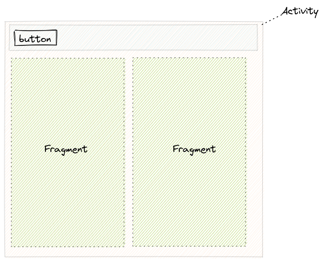
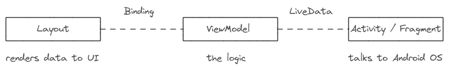

2021-03-15
Give an overview about the Android Architecture components or blueprints. You should already know the basics of Android App and System.
There are different ways to develop an app. But the challenge is to develop an app with a good architecture.
By time Android development evolved to make development more comfortable e.g. skip writing boilerplate code. Make code structure more robust, testable, maintainable.
At begin there was mainly an Activity component which represents a screen. Then Fragments where introduced with Android 3.0 (API Level 11). A type of micro-UI within an Activity.
Latetely an android support library was introduced. With Android 9.0 this support library is called AndroidX.
AndroidX is part of the Jetpack library suite.
There are also 3rd party libraries which are commonly used.
Also important to mention is the usage of kotlin language extensions or features. Namely Android KTX.
You also should know some different development approaches. E.g. single-activity-architecture.
These additional components help you to improve your code quality but bring a lot of new dependencies. First you need too know and then use it suitable.
How is the relationship of Actvity and Fragment? An Activity operates as a frame that contains the UI fragments and can provide UI elements that surround the fragment. 
Like Activity you need to create a Fragment with extending a base class. Notice that a fragment has different states compared to an Activity. In a fragment we define the UI (inflate layout to fragment). But in comparison to an Activity wou need to return the inflated layout.
class DataFragment : Fragment() {
override fun onCreateView() {
return inflater... (R.layout...)
}
}
It's similar with Activitys when you tell Android which to layout to use. Android will places the layout to activity's layout hierarchy.
override fun onCreate() {
setContentView(R.layout...)
}
A Fragment are somehow lightwight Activity. Main purpose is to manage the UI within an Activity. The OS can create an Activity not a Fragment.
An Activity extends also the Context class like Service or Application. With the Context you can access app data like resources (images, string, ...) or internal database.
With
Contextclass you can talk and use system features.
As mentioned we can navigate from Activity to Activity. You can also open a system camera activity from you app activity. The jump to another Activity is achieved with Intents and Intent Filters.
Intents and Intent Filters bring the click it (as Hyperlink in HTTP protocol) paradigm to mobile app. Thus it's a powerful mechanism which brings the web mindset to mobile apps. As Hyperlink the target address is described with URI (Uniform Resource Identifier).
content://contacts/people
geo:37.786971,-122.399677;crs=Moon-2011;u=35
An intent indicates the intention of your app.
If you want to build a robust, maintainable app you should construct your app with a clean architecture. Android best practices follows here the separation of concerns principle. E.g. activity and fragment are UI-based classes and should only contain the UI related code. It should act as a glue class between the Android OS and the app. Activity and Fragment classes should lean as possible.
Android introduced for that reason some components support the separation of responsibilities (separate UI from business logic). You will often read the components with the apprevation MVVM architecture: Model - View - ViewModel. We want to know when to use which components and what the motivation of it.
If we need to store or request/fetch data from a data source we can achieve this in different ways. You should know that read/write operation on cache/memory/in-memory is different to disc or even network. To summarize there are different data persistence layers.
| Type | IO time |
|---|---|
| cache/memory | fast |
| disc | slow |
| network | very slow |
When we develop an app our intention is mainly to receive input then display respective information. It's the usual data process: input -> process -> output. The components listed above are intended to support displaying, storing, ... data. We achieve a decopling of the code components.
With data binding we can access views (UI elements) directly over the generated Binding class. Instead of searching the hole UI tree findviewbyId we just access the view defined in the layout file directly.
Data Binding Library supports the developer to bind the UI with the data.
In other words. On one hand you have your UI (View, layout file) on the other hand you have your model (the data). With the MVVM (Model-View-ViewModel) pattern a third component the ViewModel is supported. The View communicates with the Model over the ViewModel.

Now let's see data binding in action. In your UI component you can then set data to UI.
binding.textView.text = 'data'
// OR
binding.textView.text = viewmodel.data
You can even skip this intermediate step (boilerplate code) and set value directly in your layout file with expression language.
<TextView android:text="@{viewmodel.data}" />
To get such an binding object there are some prerequirements you need to do. E.g. include the dependency, wrap layout file with <layout/> tag and inflate the layout file.
So you wrapped your layout file with <layout> and now want to use your views directly in your UI components. You need the respective binding instance. To get such an instance all you need to do is inflate the layout.
There are two ways to inflate the layout: with DataBindingUtil
val binding: FragmentDevBinding = DataBindingUtil.inflate(inflater, R.layout.fragment_dev, container, false)
The DataBindingUtil is describes as:
Utility class to create ViewDataBinding from layouts.
Or with the (generated) binding class.
val binding = MainActivityBinding.inflate(getLayoutinflater())
You may ask where do I get the *Binding class. This class will be automatically generated when you wrap your layout file with <layout> tag.
The base class for a data binding class is ViewDataBinding. Remember the DataBindingUtil can also return a data binding class.
Android documentation recommendation for DataBindingUtil usage:
Use this version only if layoutId is unknown in advance. Otherwise, use the generated Binding's inflate method to ensure type-safe inflation.
We can even rename the generate Binding class name. This is not obligatory.
<data class="Binding" />
A note about the lifecycle owner. If you want to use Data Binding with LiveData then you need to set the lifecycle owner to your binding instance. This is needed to define the scope of the LiveData object. Check also the API doc.
Sets the LifecycleOwner that should be used for observing changes of LiveData in this binding
A lifecycle owner is class with an Android lifecycle. Like Activity or Fragment.
The data binding library also provides a more sophisticated technique called binding adapter. This option give you a way to implement your own logic for setting attribute values.
ViewBinding is another way to access views. A kind of subset of data binding. In view binding there is no such techniques like binding expression, binding adapters or two-way binding.
It's a good alternative to eliminate findViewById. There is no <layout> tag required in layout file.
So, how can I use view binding? In comparison to data binding its enough to set the view binding build features to true. The binding class for a layout file will be automatically generated.
buildFeatures {
viewBinding = true
}
You can even ignore generating a binding class .
tools:viewBindingIgnore="true"
Now in your UI component you inflate your layout file with the generated binding class to get a binding class instance.
binding = ActivityMainBinding.inflate(layoutInflater)
The view model component was introduced to hold the app data model in a lifecycle aware state. Whenever the Acvitity or Fragment lifecycle changes we need to care about the data state. With ViewModel this manual process is obsolete. The ViewModel manages the data for the UI. Either a single UI component (activity/fragment) or shared UI components.
For a
ViewModelintegration we need to add dependencies, introduce aViewModelclass and get theViewModelreference from a view model provider.
Now some code. Let's create a ViewModel.
class DeveloperViewModel : ViewModel {}
In your UI component get the ViewModel instance.
val viewModel = ViewModelProvider(this).get(DeveloperViewModel::class.java)
// use viewModel to observe live data: viewModel.data.observe { ... }
Thats all. But there is also a concise way with Android KTX.
val viewModel: DeveloperViewModel by activityViewModels()
Or in an Activity
val viewModel: DeveloperViewModel by viewModels()
What if you need dependencies in your ViewModel class? E.g. add a repository to your ViewModel. Remember the ViewModel manages your data. And it make sense that a ViewModel has access to a repository layer.
Quick Refresh: A Repository is a data abstraction layer for local, network, in-memory data.
Define the ViewModel as you would usually do in OOP by using a constructor.
Then you need to define a factory class which extends from ViewModelProvider.Factory.
class DeveloperViewModel(private val r: DeveloperRepository) : ViewModel {}
class DeveloperViewModelFactory(private val r: DeveloperRepository) : ViewModelProvider.Factory {}
On instantiating you provide then this factory class to the ViewModelProvider. With Android KTX even more concise.
val vm: DeveloperViewModel by viewModels {
DeveloperViewModelFactory(repository)
}
With LiveData for example we can do reactive programming. The UI react to changes (callbacks) on data.
data.payload.observe(this, {
Log.d("#", "event received: $it. react...")
})
LiveDatais a observable component and follows the observer pattern. It's usually used in combination withViewModel. Where aViewModelholds data asLiveData.
Android KTX is a set of Kotlin extensions which is part of Android Jetpack.
Android KTX helps us the develop better apps. Better means in this context with the help of Kotlin features we are able to write concise and readable code. That's the motivation behind the KTX extentions.
Then there is kotlin-android-extensions (also known as Kotlin synthetics). A gradle plugin from jetbrains. Which is already deprecated.
Whenever you see a code snippet with the following import then its kotlin-android-extensions.
import kotlinx.android.synthetic.main.activity_main.*
You should migrate to view binding.
Some words about Jetpack. As already introduced it was formerly Android Support Library: v4 Support Libraries, v7 Support Libraries. The AndroidX library contains the existing support library and also includes the latest Jetpack components.